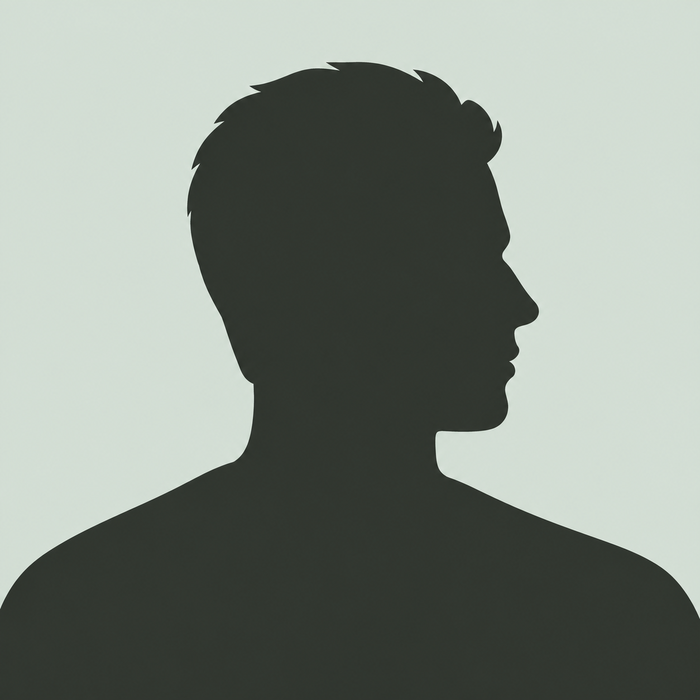
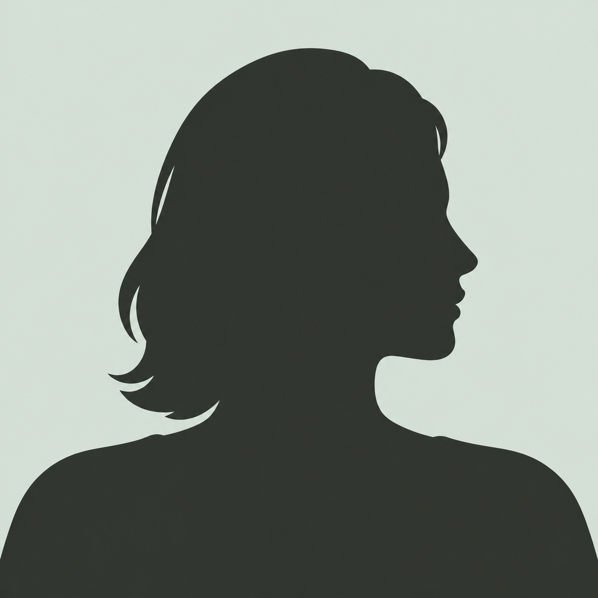
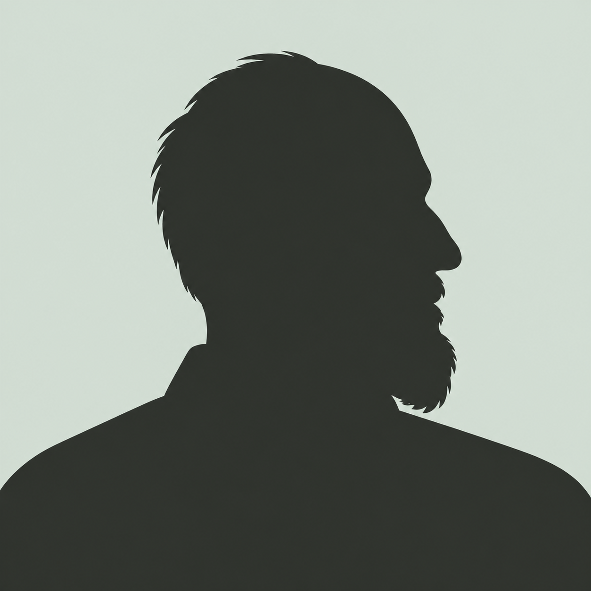
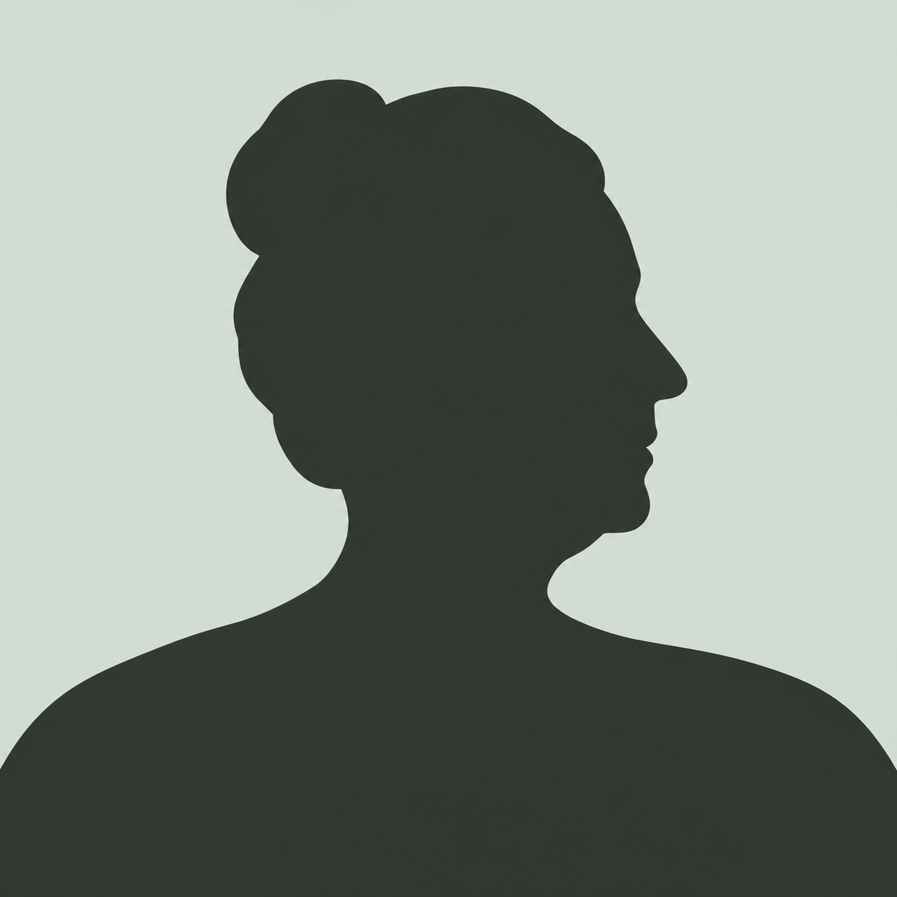
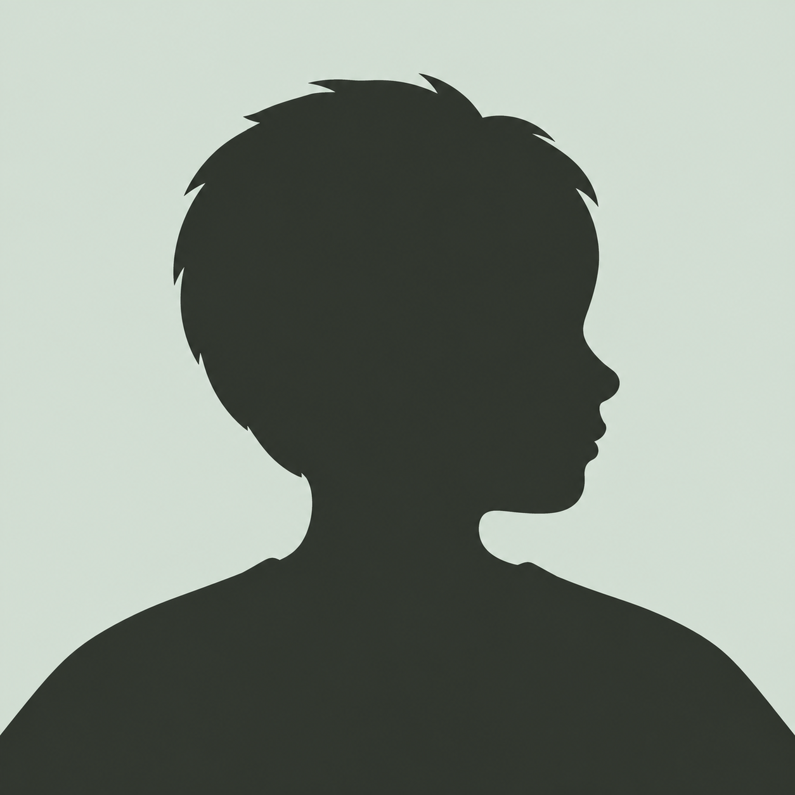
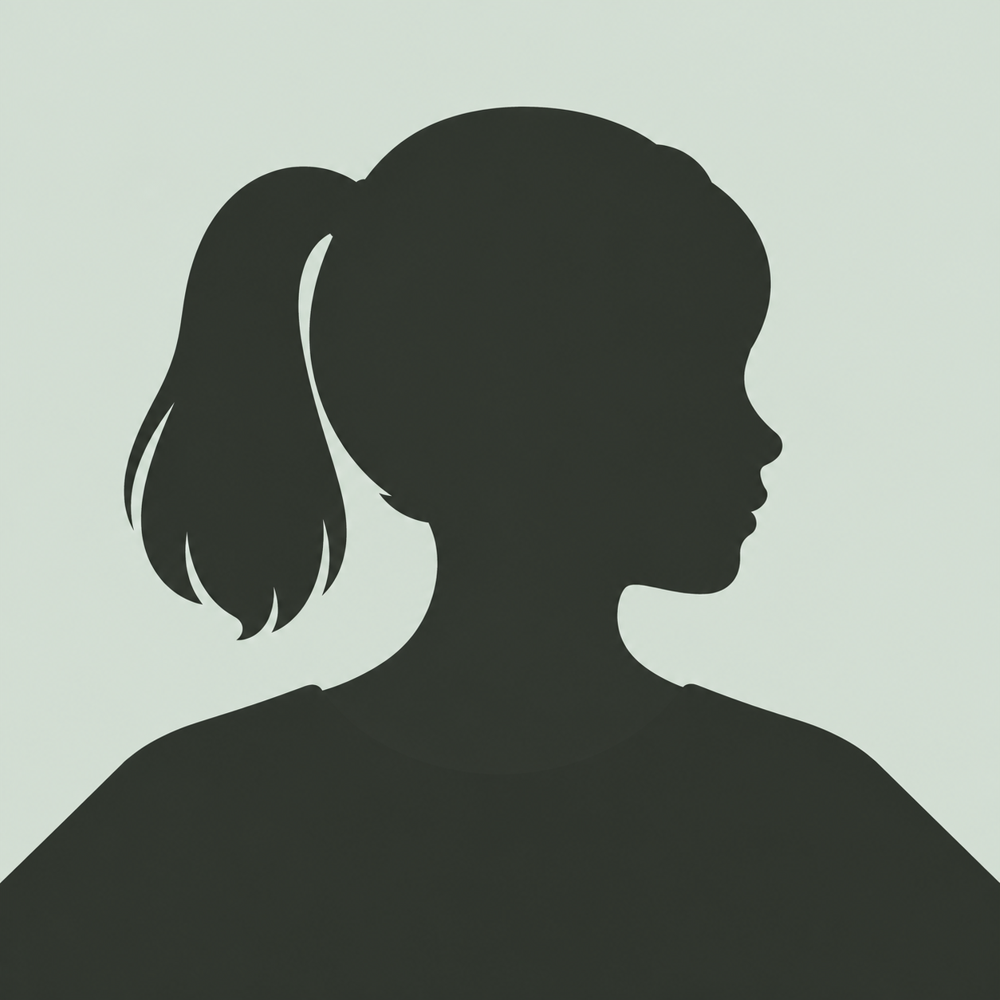

← Budapest SignalСилуэты участников
Условные изображения, не портреты реальных людей. Возраст и пол выбираются по опубликованным данным; при отсутствии сведений используется нейтральный силуэт без индивидуальных черт.

Мужчина

Женщина
Данные не указаны

Пожилой мужчина

Пожилая женщина
Группа

Мальчик

Девочка
Ребёнок · пол не указан